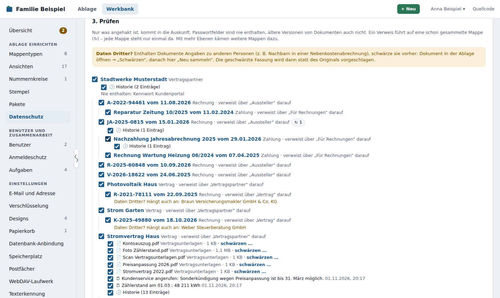
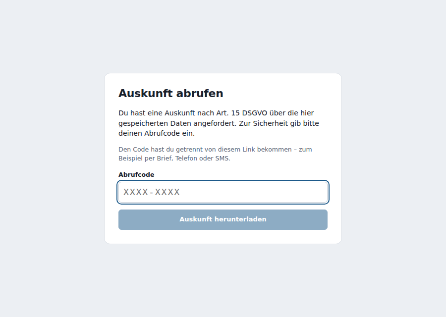
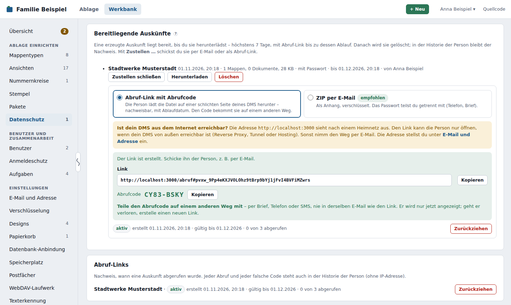

Datenschutz im DMS¶
Das DMS ist auf Datenschutz ausgelegt – „Datenschutz durch Technikgestaltung und datenschutzfreundliche Voreinstellungen“ heißt das in Art. 25 DSGVO. Es läuft bei dir, sendet nichts nach Hause und bringt Werkzeuge mit, mit denen du Auskunft gibst, Aufbewahrungsfristen einhältst und löschst. So legst du Daten von Familie, Mietern und Kunden guten Gewissens darin ab. Diese Seite zeigt, was es dafür gibt und wo du es findest, was du selbst regeln musst und wie du bei einer Anfrage Schritt für Schritt vorgehst.
Unterstützt – ersetzt nichts. Keine Rechtsberatung.
Eine Software allein ist nie „DSGVO-konform“, und ein Siegel dafür hat das DMS nicht. Datenschutzgerecht wird es erst durch Software, deine Abläufe und deine Dokumentation zusammen – wie bei der Verfahrensdokumentation nach GoBD. Das DMS stellt Daten zusammen, sperrt und löscht und hält fest, was geschah. Ob und was du herausgeben, aufbewahren oder löschen musst, entscheidest du – im Zweifel mit deinem Datenschutzbeauftragten oder einer Rechtsberatung. Diese Seite ist keine Rechtsberatung.
Datenschutz eingebaut¶
| DSGVO | Was das DMS dafür hat | Wo |
|---|---|---|
| Art. 5 Abs. 1 c und Art. 25 – Datenminimierung, datenschutzfreundliche Voreinstellungen | Selbst gehostet: Die Daten liegen nur auf deinem Gerät. Keine Telemetrie, kein Tracking, keine Werbung, keine KI-Dienste; die Texterkennung läuft im DMS selbst. Wer was sehen darf, regeln Rechte je Mappentyp mit Regeln. | Werkbank → Mappentypen → Berechtigungen |
| Art. 5 Abs. 1 e – Speicherbegrenzung; Art. 17 – Löschen | Archivmodus mit Aufbewahrungsfrist und der Liste Darf weg; Papierkorb für Mappen und Dokumente mit endgültigem Löschen; die Historie gelöschter Mappen fällt nach einer einstellbaren Zeit weg | Werkbank → Mappentypen → Archivmodus, Werkbank → Darf weg, Werkbank → Papierkorb |
| Art. 18 – Einschränkung (Sperren) | Löschsperre bis Fristende im Archivmodus – der erste Baustein eines Sperr- und Löschkonzepts; den Zugriff schränkst du über Berechtigungen ein | Werkbank → Mappentypen |
| Art. 15 – Auskunft | Auskunft als ZIP mit Deckblatt, Prüfliste und Nachweis; zustellen per Abruf-Link oder E-Mail | Werkbank → Datenschutz |
| Art. 20 – Datenübertragbarkeit | Persönlicher Export für jeden Benutzer, Vollexport aller Daten – beides in offenen Formaten (CSV, JSON, Excel, Dokumente im Original) | Profil → Konto → Meine Daten exportieren; Werkbank → Vollexport (Daten exportieren) |
| Art. 5 Abs. 2 – Rechenschaft; Art. 30 – Nachweis | Historie jeder Mappe (wer hat wann was geändert), Protokoll, Nachweis jeder Auskunft in der Historie der Person; Vorlagen Löschkonzept und Verfahrensdokumentation | Register Historie an jeder Mappe, Werkbank → Protokoll |
| Art. 32 – Sicherheit | Verschlüsselte Passwortfelder und Zugangsdaten, verschlüsselte Sicherung mit Probe-Wiederherstellung, Anmeldeschutz und Zwei-Faktor-Anmeldung, Prüfwerte für jede Datei, Hinweise zu HTTPS | Werkbank → Verschlüsselung, Sicherung, Anmeldeschutz |
Keine Telemetrie¶
Das DMS sendet keine Nutzungsdaten – weder an das Projekt noch an sonst jemanden: keine anonymen Statistiken, keine regelmäßigen „Lebenszeichen“, keine Absturzberichte, kein Tracking in der Oberfläche. Die Oberfläche lädt von Haus aus nichts von fremden Servern – keine Schriften, Skripte oder Bilder.
Von sich aus baut das DMS keine Verbindung ins Internet auf. Eine automatische Suche nach neuen Versionen gibt es nicht – also auch nichts abzuschalten. Nach außen geht es nur, wenn du es auslöst oder einrichtest:
| Verbindung | Wann | Wohin, was |
|---|---|---|
| Versionsabgleich | nur auf Knopfdruck unter Werkbank → Technik | GitHub (Stand des DMS), endoflife.date (Node.js, PostgreSQL, Alpine), npm-Registry (Bibliotheken). Die Anfrage an GitHub enthält die Commit-Kennung deiner Version, damit sich die Änderungen seitdem zählen lassen – keine Daten aus deiner Ablage. Siehe Technik. |
| Paketkatalog | auf Knopfdruck unter Werkbank → Pakete (Katalog abrufen, auf neue Versionen prüfen) und wenn du einen Installationslink aus dem Katalog öffnest | GitHub (Pakete); weitere Kataloge nur, wenn du sie einträgst |
| wenn du den E-Mail-Versand oder Postfächer einrichtest | dein Mailserver | |
| Anmeldung über einen Anbieter | wenn du sie einrichtest | dein Anbieter (OpenID Connect) |
| Pakete mit Code | nur, wenn ein Paket es braucht und du es bei der Installation bestätigst | nur die Adressen, die das Paket angibt (Rechte eines Pakets) |
| Handbuch | wenn du auf Hilfe oder ein ? klickst | Das mitgelieferte Handbuch unter /hilfe/ kommt ohne Internet aus (Hilfe ohne Internet); Links auf das Online-Handbuch öffnet dein Browser. |
Wer dem Projekt sagen möchte, dass und wie er das DMS nutzt, tut das bewusst und selbst – über die Mitmach-Seite Wer nutzt das DMS? mit dem Formular Ich nutze das DMS. Das DMS meldet nichts.
Was du selbst regeln musst¶
Das DMS gibt dir Werkzeuge. Diese Punkte bleiben bei dir als Verantwortlichem:
- Verzeichnis der Verarbeitungstätigkeiten (Art. 30), Rechtsgrundlagen und Informationspflichten (Art. 13, 14) – etwa der Datenschutzhinweis im Mietvertrag. Die Angaben dafür stehen im DMS: Mappentypen, Zwecke aus den Einstellungen, Fristen aus dem Archivmodus.
- Welche Frist gilt: Aufbewahrungsfristen klärst du mit deiner Steuerberatung; das DMS setzt um, was du einträgst.
- Löschen nach Fristende: Das DMS löscht nie von selbst. Du prüfst Darf weg regelmäßig.
- Kopien außerhalb der Ablage: Gelöschtes steckt noch in älteren Sicherungen, bis sie nach deiner Aufbewahrung wegfallen (Standard: bis zu 12 Monate; von Hand angelegte bleiben, bis du sie löschst), in Vollexporten und persönlichen Exporten unter
export/, in Kopien außer Haus, heruntergeladenen Dateien und Ausdrucken. - Wer Zugriff hat: Administratoren sehen alles. Rollen und Berechtigungen richtest du ein; Zugänge von Personen, die gehen, deaktivierst du.
- Die Umgebung: Gerät und Festplatten, Netzwerk, HTTPS, Updates, Kopie der Sicherungen außer Haus – und Verträge zur Auftragsverarbeitung mit Dienstleistern, etwa dem Mailanbieter.
- Datenpannen melden (Art. 33, 34) und, wo vorgeschrieben, einen Datenschutzbeauftragten benennen.
Schritt für Schritt¶
Auskunft an einen Benutzer¶
Ein Familienmitglied oder jemand aus dem Betrieb, der ein Konto im DMS hat, möchte wissen, was über ihn gespeichert ist.
- Selbst exportieren lassen: Unter Profil → Konto → Meine Daten exportieren bekommt er alles, was er lesen darf – Mappen mit Dokumenten, seine Aufgaben, Erinnerungen, Favoriten und seinen Papierkorb, sein Benutzerkonto ohne Passwort (Meine Daten exportieren). Prüfe vorher unter Werkbank → Vollexport, ob der persönliche Export eingeschaltet ist.
- Was darin fehlt, ergänzt du: Mappen über ihn, die er nicht lesen darf (z. B. eine Personalakte), und Einträge im Protokoll (Anmeldungen, Fehler). Ist er auch als Person erfasst – etwa als Mappe Mitarbeiter –, erteile dafür eine Auskunft wie für eine Person, die kein Benutzer ist.
- Ehemalige Benutzer können sich nicht mehr anmelden und also nicht selbst exportieren. Nimm dann die Angaben aus einem Vollexport: das Benutzerkonto unter
struktur/, seine Einträge indaten/historie.jsonlund die Mappen, die ihn betreffen. - Frist: Antworte innerhalb eines Monats (Art. 12 Abs. 3 DSGVO).
Auskunft an eine Person, die kein Benutzer ist¶
Ein Mieter, Kunde oder Kontakt fragt nach seinen Daten. Das erledigt Werkbank → Datenschutz; die Einzelheiten stehen weiter unten.
- Einmal einrichten: Verantwortlicher, Empfänger und die Mappentypen, die eine Person betreffen, jeweils mit Zweck (Einstellungen).
- Person wählen – oder an ihrer Mappe Aktionen → Auskunft erstellen … – und den Eingang der Anfrage eintragen. Frist als Aufgabe anlegen erinnert dich unter „Zu erledigen“.
- Sammeln: Das DMS folgt den Verweisen von der Mappe der Person aus (Mietvertrag, Abrechnungen, Post, Wohnung). Darunter stehen Vorschläge aus der Suche – Mappen, in denen Name, E-Mail-Adresse, Kundennummer oder IBAN vorkommen, auch im Text der Dokumente und Notizen.
- Weitersuchen, wenn die Person auch anderswo vorkommt: In der Ablage findet die erweiterte Suche ohne gewählten Mappentyp über alle Mappentypen, mit Volltext auch in Dokumenten und Notizen. Was dazugehört, nimmst du in der Prüfliste aus den Vorschlägen auf oder verknüpfst es mit der Mappe der Person und sammelst neu.
- Prüfen und schwärzen: Nur Angehaktes geht hinaus; Angaben zu anderen Personen schwärzt du vorher.
- Erzeugen und zustellen: am besten mit Passwort, dann per Abruf-Link oder E-Mail. Der Nachweis steht in der Historie der Person.
Löschen auf Verlangen¶
Jemand verlangt, dass seine Daten gelöscht werden (Art. 17 DSGVO).
- Finden, was zur Person gehört: wie bei der Auskunft – die Prüfliste unter Werkbank → Datenschutz zeigt alle Mappen, die an der Person hängen, und Vorschläge aus der Suche. Erzeugen musst du dafür nichts.
- Prüfen, ob eine Aufbewahrungsfrist entgegensteht (Art. 17 Abs. 3): Mappen eines Mappentyps im Archivmodus tragen Archiv · aufbewahren bis … und lassen sich vor Fristende ohnehin nicht löschen – auch nicht von Administratoren. Prüfe auch Mappen ohne Archivmodus: Rechnungen oder Verträge können Fristen haben, die du (noch) nicht eingetragen hast.
- Frist steht entgegen → sperren statt löschen. Die Mappe bleibt bis Fristende; benutze sie nur noch dafür, wofür du sie aufbewahren musst.
- Zugriff einschränken: Gib dem Mappentyp ein Ja/Nein-Feld wie Gesperrt und lege in den Berechtigungen eine Regel an: Wenn „Gesperrt ist ja“, dann Lesen und Bearbeiten nur für eine Rolle wie Datenschutz. Administratoren sehen weiter alles.
- Vermerken: eine Notiz an der Mappe, z. B. „Gesperrt auf Verlangen vom 03.11.2026 – löschen nach Fristende“.
- Nach Fristende steht die Mappe unter Werkbank → Darf weg; dann löschst du sie wie unten.
- Sag der Person, dass und bis wann ihre Daten gesperrt bleiben und warum.
- Keine Frist → löschen:
- In der Ablage die Mappen löschen – einzeln oder über die Mehrfachauswahl; einzelne Dokumente an der Dokumentzeile. Eine Mappe, auf die noch andere verweisen, lässt sich nicht löschen: Entferne zuerst den Verweis oder lösche die verweisende Mappe mit, wenn auch sie weg soll.
- Unter Werkbank → Papierkorb die Mappen und Dokumente wählen und endgültig löschen (oder den ganzen Papierkorb leeren). Erst dann sind auch Dateien und Volltext weg.
- Was danach noch bleibt – sag es der Person, wenn sie fragt:
- die Historie der gelöschten Mappen für die eingestellte Zeit (Standard 365 Tage, einstellbar; 0 löscht sie sofort mit – das gilt dann für alle Mappen),
- ältere Sicherungen, bis sie nach der Aufbewahrung wegfallen,
- Exporte unter
export/, bereitliegende Auskünfte (höchstens 7 Tage oder bis ein Abruf-Link abläuft) und Kopien außerhalb des DMS.
- Festhalten, dass gelöscht wurde: Notiere Datum, Anfrage und welche Arten von Daten gelöscht wurden – ohne die Daten selbst –, z. B. in einer Mappe für Datenschutzanfragen.
Hat die Person ein Benutzerkonto, das schon benutzt wurde, deaktivierst du es: Das DMS löscht solche Konten nicht, damit „angelegt von“ und Verweise stimmen. Ihr Name bleibt dort stehen.
Sperr- und Löschkonzept aufsetzen¶
Für Vermieter, Selbständige und Betriebe: einmal festlegen, wie lange welche Daten bleiben, und das DMS so einrichten, dass es dich daran hält.
- Datenarten erfassen: Jeder Mappentyp ist eine Datenart – Mieter, Mietvertrag, Rechnung, Kunde, Bewerbung … Trage sie in die Vorlage Löschkonzept ein, mit Zweck und Grund für die Aufbewahrung.
- Fristen festlegen – mit deiner Steuerberatung: z. B. Buchungsbelege 8 Jahre, Geschäftsbriefe 6 Jahre, Bewerbungen ohne Zusage 6 Monate.
- Archivmodus einschalten für jeden Mappentyp mit gesetzlicher Frist: Frist in Jahren und Stichtag (z. B. Rechnungsdatum). Bis Fristende ist die Mappe gegen Löschen gesperrt; danach steht sie unter Darf weg. Siehe Archivmodus.
- Kürzere Fristen ohne Archivmodus (z. B. Interessenten, Bewerbungen): Lege eine Ansicht an, die die fälligen Mappen nach einem Datumsfeld zeigt, und schau sie regelmäßig durch.
- Wie lange Gelöschtes nachwirkt: Aufbewahrung des Papierkorbs (Standard 30 Tage), Historie gelöschter Mappen (Standard 365 Tage) und Aufbewahrung der Sicherungen passend zu deinem Konzept einstellen.
- Regelmäßig prüfen: z. B. jedes Jahr im Januar Werkbank → Darf weg durchgehen und löschen, was weg darf. Gelöscht wird nie automatisch.
- Sperren auf Verlangen wie unter Löschen auf Verlangen beschrieben.
- Dokumentieren: Das ausgefüllte Löschkonzept legst du selbst als Mappe im DMS ab und hältst es aktuell.
Auskunft erteilen: Werkbank → Datenschutz¶
Wer Daten von Kunden, Mietern oder Kontakten verwaltet, muss auf Anfrage sagen können, was er über sie gespeichert hat – und das in einer Form, die die Person mitnehmen kann. Unter Werkbank → Datenschutz erledigt das DMS das in wenigen Minuten.
Bereich nicht in der Leiste?
Dieser Bereich gehört zur Werkbank-Vorlage Betrieb. In der Vorlage Haushalt, mit der neue Installationen beginnen, ist er ausgeblendet. Einblenden kannst du ihn unter Werkbank anpassen, für alle oder nur für dich. Ausgeblendet heißt nicht abgeschaltet: Der Bereich arbeitet weiter, und seine Hinweise stehen immer in der Übersicht.

Einstellungen¶
Einmal einrichten, unten auf der Seite unter Einstellungen:
- Verantwortlicher: Name und Anschrift – steht als Absender auf dem Deckblatt.
- Empfänger: an wen du Daten weitergibst (z. B. Steuerberatung, Hausmeisterdienst). Das ist der Vorschlag für jede Auskunft; du kannst ihn je Auskunft ändern.
- Rechte der Person: der Text auf dem Deckblatt (Berichtigung, Löschung, Einschränkung, Datenübertragbarkeit, Widerspruch, Beschwerde). Ein Vorschlag steht schon drin. Wie überall im DMS spricht auch das Deckblatt die Person mit „du“ an – du kannst den Text hier anpassen.
- Mappentypen: Hake an, welche Mappentypen eine Person betreffen – z. B. Mieter, Kunde, Vertragspartner, Kontakt. Nur Mappen dieser Typen lassen sich als Betroffene wählen. Je Mappentyp trägst du den Zweck ein (z. B. „Durchführung des Mietverhältnisses“); er steht auf dem Deckblatt bei jeder Art von Daten, die herausgeht.
Die Speicherdauer auf dem Deckblatt kommt aus dem Archivmodus: Hat ein Mappentyp eine Aufbewahrungsfrist, steht sie dort mit dem spätesten „aufbewahren bis“; sonst „solange für den Zweck nötig“.
Auskunft nach Art. 15 DSGVO¶
- Person wählen: Art (einer der markierten Mappentypen) und Name suchen – oder direkt an der Mappe unter Aktionen → Auskunft erstellen … (nur für Administratoren und nur bei Mappentypen, die eine Person betreffen).
- Frist: Trage ein, wann die Anfrage eingegangen ist, und lege mit Frist als Aufgabe anlegen eine Aufgabe für dich an – „Auskunft nach Art. 15 DSGVO an … bis …“, fällig einen Monat nach Eingang (Art. 12 Abs. 3 DSGVO). Sie steht wie jede Aufgabe unter „Zu erledigen“.
- Sammeln: Das DMS folgt den Verweisen von der Mappe der Person aus – Mappen, die darauf verweisen (Mietvertrag → Nebenkostenabrechnungen, Post) und Mappen, auf die sie verweist (Wohnung). Die Tiefe stellst du ein (Vorgabe 2: Vertrag und dessen Rechnungen). Jede Mappe geht nur in der Richtung weiter, über die sie erreicht wurde: Von der Wohnung aus sammelt das DMS also nicht die anderen Mieter. Kreise (zwei Verträge, die aufeinander verweisen) werden erkannt; jede Mappe steht nur einmal da. Benutzer und Rollen sind nie dabei.
- Prüfen: Die Liste zeigt den Baum mit Häkchen je Mappe, Dokument, Notiz und Historie. Nur Angehaktes geht hinaus, und erst wenn du „Ich habe die Auswahl geprüft“ bestätigst, lässt sich die Auskunft erzeugen.
- Daten Dritter? Ist eine Mappe noch mit anderen Personen verbunden (Mappen eines Typs, der eine Person betrifft – z. B. eine Wohnung, in der auch andere Mieter wohnen), steht das dabei. Enthält ein Dokument Angaben zu anderen Personen, öffne es über schwärzen … in einem neuen Tab, schwärze die Stellen (Schwärzen) und sammle neu: Die geschwärzte Fassung ist dann angehakt, das Original nicht.
- Notizen sind vorgewählt. Hältst du eine zurück (z. B. eine interne Bewertung), ist eine Begründung Pflicht; sie steht im Nachweis, nicht in der Auskunft.
- Vorschläge aus der Suche: Mappen, die nicht über Verweise an der Person hängen, aber ihren Namen, ihre E-Mail-Adresse, Kundennummer oder IBAN enthalten (auch in Dokumenten und Notizen). Sie sind nicht angehakt – nimm sie nur auf, wenn sie wirklich zur Person gehören.
- Erzeugen: Empfänger und eine Anmerkung fürs Deckblatt, optional ein Passwort (mindestens 10 Zeichen, „Vorschlagen“ erzeugt eines). Die Auskunft entsteht im Hintergrund; danach erscheint Herunterladen.
Was die ZIP-Datei enthält¶
| Datei/Ordner | Inhalt |
|---|---|
Deckblatt.pdf |
„Auskunft nach Art. 15 DSGVO“ mit Absender: welche Daten (Arten und Felder), Zwecke, Herkunft (Kanäle der Post: E-Mail, Scan …), Empfänger, Speicherdauer, Rechte der Person |
Uebersicht.html |
alle Mappen mit ihren Angaben und Links zu den Dokumenten – im Browser zu öffnen |
Uebersicht.csv |
dasselbe als Tabelle |
ablage/<Art>/<Titel>/ |
je Mappe die Dokumente im Original (bzw. geschwärzt), dazu mappe.pdf und mappe.json |
daten/, struktur/, manifest.json |
maschinenlesbar im Format des Vollexports (CSV, JSON Lines, Excel) – deckt auch die Datenübertragbarkeit (Art. 20) ab |
Nie enthalten sind Passwortfelder (weder Wert noch Feld) und andere verschlüsselte Werte, ältere Versionen von Dokumenten (sie könnten ungeschwärzt sein), Aufgaben, Benutzerkonten und Berechtigungen. Hältst du eine Notiz zurück, fehlen in der Historie dieser Mappe auch die Einträge zu Notizen (sie nennen deren Text).
Mit Passwort liegt die Auskunft als Auskunft.zip in einer mit AES-256 verschlüsselten ZIP-Datei – so sind auch die Dateinamen (z. B. der Name der Person) nicht zu sehen. Öffnen lässt sie sich z. B. mit 7-Zip, WinZip oder Keka (macOS), nicht mit dem eingebauten Entpacken von Windows. Teile das Passwort getrennt von der Datei mit, z. B. per Telefon oder SMS.
Nachweis und Aufbewahrung¶
- In der Historie der Person steht „Auskunft erteilt“ mit Zeit, wer sie erstellt hat, Anzahl Mappen, Dokumente und Notizen, ob mit Passwort und die Begründungen zurückgehaltener Notizen – ohne Inhalte. Dasselbe steht ohne Begründungen im Protokoll (Modul „datenschutz“).
- Die ZIP-Datei liegt unter Bereitliegende Auskünfte, bis du sie herunterlädst – danach wird sie gelöscht –, höchstens 7 Tage. Mit einem gültigen Abruf-Link bleibt sie, bis die Person sie so oft abgerufen hat wie vorgesehen oder der Link abläuft. Gespeichert wird sie neben den Exporten (
export/auskunft/im Sicherungsordner, ohne Sicherungsordner im temporären Ordner des Containers); sie ist nicht Teil der Sicherung. - Brauchst du sie noch einmal, erzeuge sie neu.
Wer darf das?¶
Nur Administratoren. Ein eigenes Recht „Auskunft erteilen“ gibt es (noch) nicht: Die Berechtigungen regeln je Mappentyp Anlegen, Lesen, Bearbeiten, Löschen und Passwörter – eine Auskunft greift über alle Mappentypen. Abgestufte Rechte für Administratoren kommen später.
Auskunft zustellen¶
Die fertige Auskunft schickst du direkt aus dem DMS – unter Bereitliegende Auskünfte mit Zustellen … (oder gleich nach dem Erzeugen). Kommst du von der Mappe der Person (Aktionen → Auskunft erstellen …), stehen ihre Auskünfte oben. Zwei Wege:
| Abruf-Link mit Abrufcode | ZIP per E-Mail | |
|---|---|---|
| Wie | Die Person bekommt einen Link auf eine schlichte Seite deines DMS und lädt die Datei dort mit einem Abrufcode herunter. | Die ZIP-Datei geht als Anhang über den E-Mail-Versand des DMS. |
| Voraussetzung | Dein DMS ist aus dem Internet erreichbar. | Die Auskunft ist mit Passwort erzeugt; höchstens 50 MB (viele Mailserver nehmen nur 10–25 MB). |
| Nachweis | Jeder Abruf mit Zeitpunkt, „abgerufen am …“, Benachrichtigung | „per E-Mail gesendet an … am …“ |
| Zweiter Weg | Abrufcode per Brief, Telefon oder SMS | Passwort per Telefon, SMS oder Brief |
Vorgeschlagen ist der Abruf-Link, wenn die Adresse des DMS nach Internet aussieht – sonst (z. B. http://192.168.…, localhost, nas.local) die E-Mail.
Weg 1: per E-Mail¶
Nur für Auskünfte mit Passwort – unverschlüsselt geht keine Auskunft per E-Mail hinaus. Gib die Adresse ein; Betreff und Text sind vorbereitet (in Du-Form) und lassen sich ändern. Das Passwort steht nie in der E-Mail – das DMS kennt es nach dem Erzeugen gar nicht mehr. Teile es auf einem anderen Weg mit. Antworten gehen an deine Adresse. In der Historie der Person steht „Auskunft per E-Mail gesendet an …“.
Weg 2: Abruf-Link mit Abrufcode¶
- Adresse der Person (optional): Mit Link per E-Mail an diese Adresse schicken verschickt das DMS den Link – ohne Code. Ohne E-Mail-Versand kopierst du den Link und schickst ihn selbst.
- Gültig (Vorgabe 30 Tage, höchstens 90) und Abrufe (Vorgabe 3, höchstens 10).
- Abrufcode: Am besten vom DMS erzeugen (8 Zeichen ohne Verwechsler wie 0/O und 1/I). Alternativ ein eigener Code, den nur die Person kennt – z. B. die Vertragsnummer (mindestens 6 Zeichen). Eine Kundennummer allein ist schwach: Sie steht oft auf Briefen und Rechnungen.
- Abruf-Link erstellen: Link und Code stehen nur jetzt auf dem Bildschirm. Teile den Code auf einem anderen Weg mit – per Brief, Telefon oder SMS, nie in derselben E-Mail wie den Link. Geht er verloren, erstelle einen neuen Link; der alte gilt dann nicht mehr.
Die Person öffnet den Link und sieht nur: „Du hast eine Auskunft nach Art. 15 DSGVO über die hier gespeicherten Daten angefordert. Zur Sicherheit gib bitte deinen Abrufcode ein.“ – kein Menü, kein Logo, kein Name des Haushalts, keine Anmeldung. Mit dem richtigen Code startet der Download.

Unter Abruf-Links stehen alle Links mit Stand (aktiv, abgelaufen, alle Abrufe verbraucht, gesperrt nach Fehlversuchen, zurückgezogen), Abrufen, „zuletzt abgerufen am …“ und falschen Codes – auch, wenn die ZIP-Datei längst gelöscht ist. Zurückziehen macht einen Link sofort ungültig; für die ZIP-Datei gilt dann wieder das Ende 7 Tage nach dem Erstellen.

Nachweis und Benachrichtigung: Jeder Abruf und jeder falsche Code steht in der Historie der Person (Zeitpunkt, erfolgreich oder nicht – ohne IP-Adresse, ohne Code). Wer den Link oder die Auskunft erstellt hat und wer die Person als Favorit (★) hat, bekommt unter „Zu erledigen“ die Aufgabe Auskunft – „Auskunft an … wurde abgerufen“. Solange sie offen ist, kommt für denselben Link keine zweite. Sind alle Abrufe verbraucht, wird die ZIP-Datei gelöscht.
Sicherheit der Abrufseite¶
Die Abrufseite ist der einzige Weg, ohne Anmeldung an Daten im DMS zu kommen. Darum:
- Nicht zu erraten: Der Link enthält nur einen Zufallsschlüssel mit 256 Bit, sonst nichts – keine Id, keinen Namen. Er steht hinter dem
#(/abruf#…): Diesen Teil schickt der Browser nie mit, er landet also in keinem Zugriffsprotokoll (auch nicht beim Reverse-Proxy) und in keinem Referer. - Zwei Faktoren: Link (E-Mail) und Abrufcode (anderer Weg). Gespeichert sind nur Hashes – der Schlüssel als SHA-256, der Code wie ein Passwort (scrypt); verglichen wird in konstanter Zeit.
- Keine Auskunft über Links: Ein unbekannter Link, ein falscher Code und ein gesperrter Link ergeben dieselbe Meldung in derselben Zeit. Erst mit richtigem Code erfährt die Person, dass ihr Link abgelaufen, verbraucht oder zurückgezogen ist.
- Sperre: Nach 10 falschen Codes ist der Link gesperrt – dann hilft auch der richtige nicht mehr; du erfährst es über die Aufgabe Auskunft. Zusätzlich zählt der Anmeldeschutz Fehlversuche je IP-Adresse (Vorgabe: 5 je Minute, 30 je Stunde über alle Links und Anmeldungen).
- Download über ein Einmal-Ticket: Nach dem richtigen Code gibt es ein Ticket für genau einen Download, zwei Minuten gültig. Gezählt wird beim Start des Downloads; ein abgebrochener Download steht als abgebrochen in der Historie.
- Protokoll ohne Geheimnisse: Im Protokoll (Modul „datenschutz“) stehen Abrufe und Fehlversuche mit gekürzter IP (z. B.
203.0.113.0), nie Schlüssel oder Code. - Die Anfrage mit dem Code braucht die Kennung der eigenen Oberfläche (Schutz vor fremden Seiten, CSRF); die Seite lädt sonst nichts aus dem DMS (keinen Kontostatus, kein Design).
Erreichbarkeit aus dem Internet¶
Der Abruf-Link funktioniert nur, wenn die Person dein DMS von außen erreicht. Viele Installationen zu Hause sind das nicht – dann nimm den Weg per E-Mail. Soll das DMS erreichbar sein, geht das über einen Reverse-Proxy mit HTTPS (z. B. auf dem NAS mit Portfreigabe), einen Tunnel (z. B. Cloudflare Tunnel, Tailscale Funnel) oder ein gemietetes Hosting. Trage unter E-Mail und Adresse die Adresse ein, unter der es von außen erreichbar ist – sie steht im Link. Wer nur die Abrufseite nach außen geben will, gibt am Proxy /abruf, /api/abruf, /api/abruf/datei und die Dateien der Oberfläche (/assets/) frei.
Schnittstelle¶
Alles geht auch über die API: POST /api/v1/werkbank/auskunft/vorschau (Prüfliste), POST /api/v1/werkbank/auskunft (erzeugen, Hintergrundauftrag), GET /api/v1/werkbank/auskunft/{id}/zip, POST /api/v1/werkbank/auskunft/frist und GET/PUT /api/v1/werkbank/datenschutz; zum Zustellen POST /api/v1/werkbank/auskunft/{id}/email, POST /api/v1/werkbank/auskunft/{id}/link und POST /api/v1/werkbank/auskunft/link/{id}/widerrufen. Die Abrufseite selbst (POST /api/abruf, GET /api/abruf/datei) gehört nicht zur API. Die Sammlung über Verweise selbst steht jedem Benutzer mit seinen Rechten unter GET /api/v1/mappen/{id}/baum zur Verfügung.